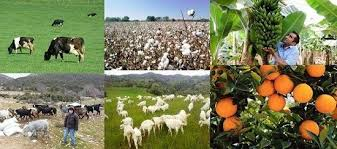

AKDENÝZ BÖLGESÝ HAYVANCILIK
Geçmiþ yýllarda Göksu deltasýnda büyük öneme sahip olan hayvancýlýk, günümüzde otlaklarýn tarým ve yerleþim alanlarý þeklinde kullanýlmasýyla önemini kaybetmiþtir. Yaz aylarýnda bölgeye gelen 10-15 ailelik göçerler hayvancýlýkla uðraþmakta olup, bu mevsim bölgedeki otlatma baskýsý nispeten artmaktadýr. Özellikle daðlýk kesimlerde yaþayan halkýn geçim kaynaðý hayvancýlýða dayanmaktadýr. Hayvancýlýk, yörenin ovalýk kesiminde ahýr hayvancýlýðý biçiminde geliþirken, yüksek kesimlerde bunun yerini mera hayvancýlýðý alýr. Yörede en çok yetiþtirilen hayvanlar kýl keçisi, koyun ve sýðýrdýr. Kümes hayvancýlýðýnda ise birkaç özel çiftlik dýþýnda genellikle aile iþletmeciliði yaygýn durumdadýr.
Akdeniz Bölgesi’nde çayýr ve otlaklarýn az yer tutmasýna karþýn beslenen hayvan sayýsý bir hayli fazladýr. Bu durumun nedeni her zaman yeþil kalabilen ve 800 m’lere kadar çýkabilen maki topluluðunun varlýðýdýr. Teke Yarýmadasý, Taþeli Platosu ve Torýs Daðlarý’nda küçükbaþ hayvancýlýk yaygýndýr. Özellikle kýl keçisi beslenir. Daðlarýn yüksek kesimlerinde koyun yetiþtirilir. Arazinin çok engebeli olmasý nedeniyle hayvanlarýn et ve süt verimi düþüktür. Antalya Yöresi’nde arýcýlýk önemlidir.
Bitkisel üretimindeki ileri teknoloji düzeyi hayvancýlýkta yerini geleneksel ve ilkel yöntemlere býrakýr; bu nedenle hayvancýlýk pek geliþmemiþtir. Daha çok küçük baþ hayvanlar beslenir. Ülkedeki kýl keçilerinin ¼’ü koyunlarýn ise %06’sý Akdeniz bölgesindedir. Bitkisel üretimden elde edilen gelirin hayvancýlýktan elde edilen gelire göre çok yüksek olmasý hayvancýlýkla uðraþan göçerlerin bitkisel üretime kaymasýna yol açmaktadýr. Yaygýn olarak tavukçuluk ve arýcýlýk yapýlan bölgede elde edilen bal miktarýnýn Türkiye üretimi içindeki payý %12’dir. Deniz canlýlarý açýsýndan pek zengin olmayan Akdeniz’de küçük çapta balýkçýlýk yapýlýr.
Balýkçýlýk
Oldukça uzun bir kýyý þeridi olan alanda su ürünleri faaliyeti son zamanlarda geliþme göstermiþtir. Bölgede kýyý ve açýk deniz balýkçýlýðý yapýlmaktadýr.
Akgöl’de ticari deðeri olan 4 balýk türü bulunmaktadýr. Bunlarda ikisi tuzluluða töleranslý göçmen balýk türlerinden olan yýlan balýðý ve haskefaldir. Diðer iki tür olan sazan ve karabalýk ise gölde yumurtlarlar. Yýlan balýðý ve karabalýk ihraç edilmekte iken diðer iki tür yerel tüketime sunulmaktadýr.
Paradeniz lagününde dalyan balýkçýlýðý yapýlmaktadýr. Deniz levreði, çipura, singit, sivriburun, karagöz, melanurya, sarýgöz, çizgili mercan ve mercan alanda avlanan balýk türleridir.
Deltada, kýyý balýkçýlýðý bütün yýl boyunca yapýlmaktadýr. Deltanýn kuzeyinde yer alan sulama kanallarýnda ise sazan ve kefal balýklarý avlanmaktadýr. Balýkçýlýðýn yanýsýra yörede mavi yengeç ve karides avcýlýðý da önemli bir yer tutmaktadýr.
